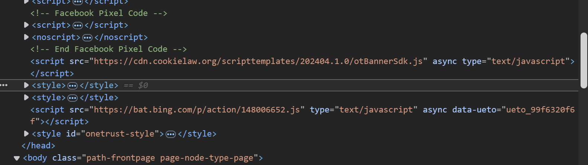

bij de vives-site worden de eerste inline style attributen gebruikt in een <noscript>
Op de vives website wordt <style> geïntroduceerd op het einde van de <head>
De verschillende links naar andere css bestanden worden in de paginabron vermeldt en hier zijn er 4.